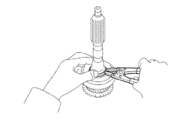
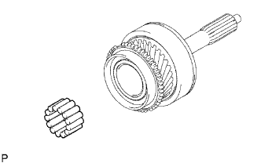

TRỤC SƠ CẤP > LẮP RÁP |
| 1. LẮP VÒNG BI PHÍA TRƯỚC TRỤC SƠ CẤP |
Dùng SST và máy ép, ép vòng bi phía trước mới vào.
Chọn phanh hãm trục sao cho cho độ rơ hướng kính nhỏ nhất.
| Dấu | Độ dày |
| 0 | 2.05 đến 2.10 mm (0.0807 đến 0.0827 in.) |
| 1 | 2.10 đến 2.15 mm (0.0827 đến 0.0847 in.) |
| 2 | 2.15 đến 2.20 mm (0.0847 đến 0.0866 in.) |
| 3 | 2.20 đến 2.25 mm (0.0866 đến 0.0886 in.) |
| 4 | 2.25 đến 2.30 mm (0.0886 đến 0.0906 in.) |
| 5 | 2.30 đến 2.35 mm (0.0906 đến 0.0925 in.) |
|  |
Dùng kìm tháo phanh, lắp phanh hãm.
| 2. LẮP VÒNG BI TRỤC SƠ CẤP |
|  |
Bôi mỡ MP lên vòng bi trục sơ cấp và lắp chúng vào trục sơ cấp.
| 3. LẮP VÀNH ĐỒNG TỐC NO.2 |
 |
Bôi dầu bánh răng lên vành đồng tốc No.2 và lắp nó vào trục sơ cấp.